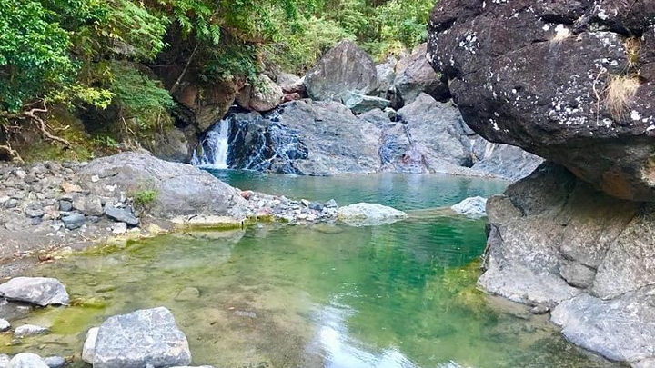
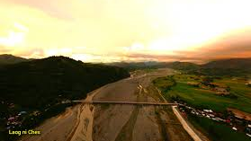

Antique - The Hidden Gem
🗺️ Geography & Location

Antique is one of the six provinces comprising Western Visayas, also known as Region VI, and one of the four provinces located on the island of Panay.
With a total land area of approximately 2,729.17 square kilometers, the province forms an elongated stretch of land occupying the entire western side of the island. It is bordered by the rugged Central Panay Mountain Range, which separates it from the neighboring provinces of Aklan to the northeast, Capiz to the east, and Iloilo to the southeast, while the Sulu Sea lies along its western coastline.
Antique’s geography is defined by its combination of mountainous terrain and coastal plains. The central mountains serve as a natural barrier and watershed, while the coastal areas provide fertile land for agriculture and access to rich marine resources. This unique landscape supports a variety of ecosystems, from dense forests and river systems to coral reefs and mangrove areas along the coast.
The province’s westernmost and northernmost point is Semirara Island, located off its coast, while its eastern boundary reaches toward the mountainous interior of Panay. The municipality of Anini-y marks the southernmost tip of Antique. In terms of shape, the province resembles a seahorse, stretching approximately 155 kilometers in length and about 35 kilometers at its widest point.
This distinctive geography not only defines Antique’s physical landscape but also influences its climate, livelihoods, and patterns of settlement. Coastal communities thrive on fishing and trade, while upland areas rely on farming and forest resources, creating a balanced interaction between people and their natural environment.
PHYSICAL FEATURES

|

|

|

|
|
Nogas Island |
Hurao-Hurao Island |
Mararison Island |
Batbatan Island |
Antique is characterized by its rugged and diverse landscape, offering a mix of coastal beauty, mountainous terrain, and rich natural ecosystems. Along its coastline are several islands known for their scenic beaches and marine life. Nogas Island, Hurao-Hurao Island, and Mararison Island feature long stretches of white sand beaches that are perfect for relaxation, swimming, and shell-hunting. In contrast, Batbatan Island is a favorite destination for scuba divers due to its well-preserved coral reefs and vibrant underwater biodiversity.
One of the province’s most prominent natural landmarks is Mount Madja-as, located in the municipality of Culasi. Standing at 2,117 meters (6,946 feet), it is the highest peak on the island of Panay. This dormant volcano is known for its scenic lakes and approximately 14 waterfalls scattered across its slopes. It is also deeply rooted in local mythology, believed to be the legendary home of Bulalakaw, the supreme deity of ancient inhabitants. Today, Mount Madja-as serves as a challenging yet rewarding destination for hikers and trekkers seeking adventure and breathtaking views.
Another notable peak is Mount Nangtud, the second-highest mountain in Antique and Panay Island, with an elevation of 2,074 meters (6,804 feet) above sea level. Located along the border of Antique and Capiz, it is known for its dense forests, rich biodiversity, and demanding trekking routes, making it a popular destination for experienced mountaineers.
|
 |

|
 |
|
Sibalom River |
Paliwan River |
Cangaranan River |
|
73 km |
58.2 km |
57.4 km |
Antique is also rich in freshwater resources, with nine major rivers flowing across the province. The longest is the Sibalom River, stretching approximately 73 kilometers, followed by the Paliwan River (58.2 km) and the Cangaranan River (57.4 km). Other significant rivers include the Dalanas River, Cairawan River, Ypayo River in Patnongon, Tibiao River, Malandog River, and Bacong River. These rivers play a vital role in agriculture, local livelihoods, and ecological balance, while also offering opportunities for activities such as river trekking, rafting, and eco-tourism.
With its combination of islands, mountains, and river systems, Antique provides a dynamic natural environment that supports both biodiversity and tourism. Its landscapes not only offer scenic beauty but also reflect the province’s deep connection between nature, culture, and everyday life.